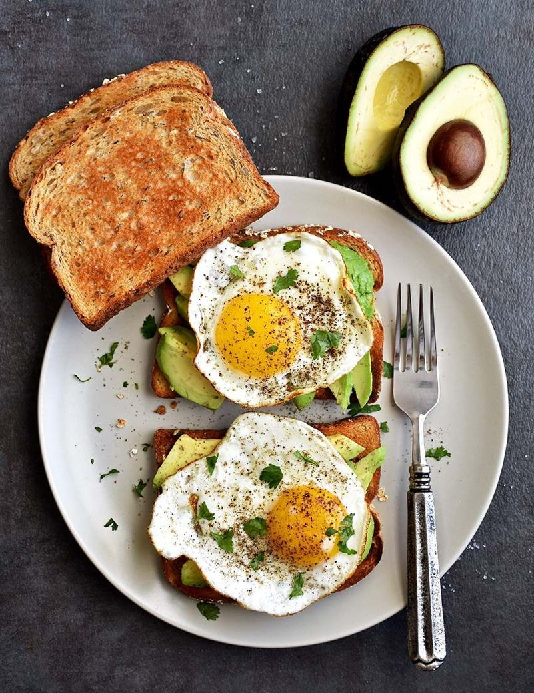
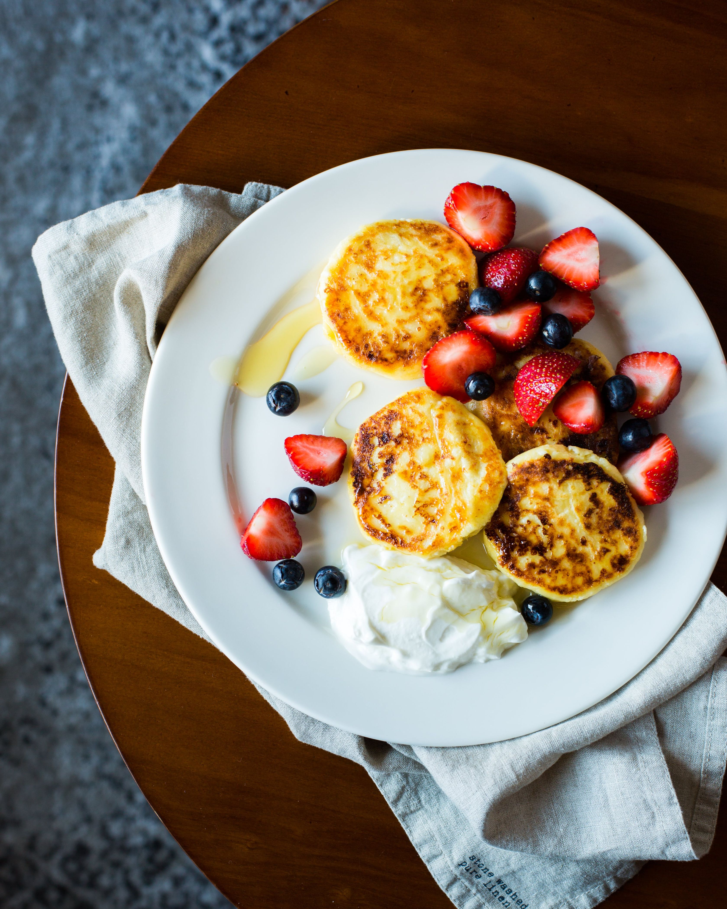
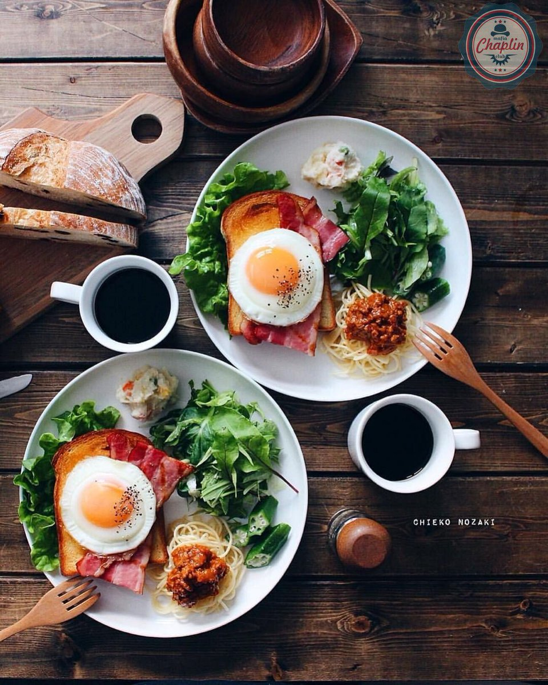
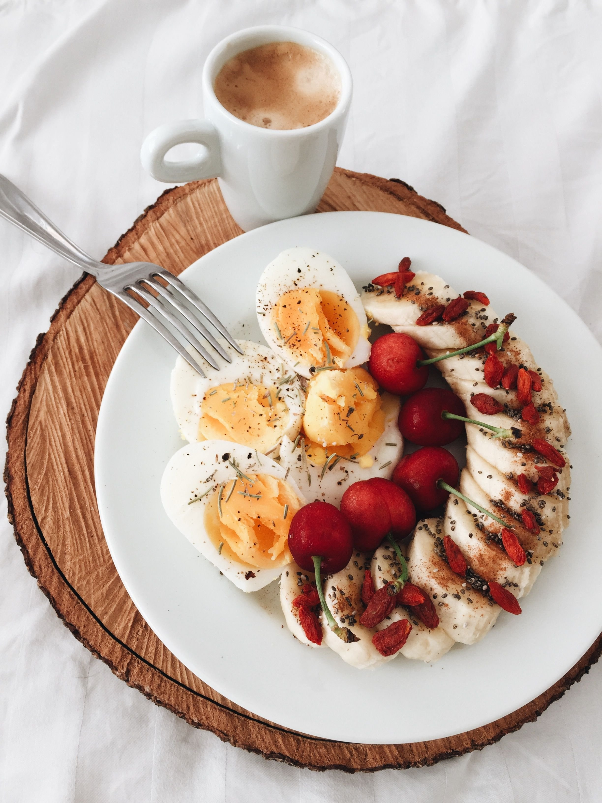

СЭНДВИЧ КРОК-МАДАМ
Наивкуснейший, оригинальный, легкий, с утренним настроением! Сэндвич Крок-мадам идеально подавать на завтрак. Это супер вкусное блюдо, которое хорошо и надолго насыщает. С кофе или чаем бутерброд еще вкуснее! И взрослые, и дети будут в восторге!

СЫРНИКИ ИЗ ТВОРОГА С МУКОЙ НА СКОВОРОДЕ
Наивкуснейшие, пышные, простые! Полезный завтрак для всех! Сырники из творога с мукой на сковороде содержат мало муки, что делает их чрезвычайно нежными, мягкими, воздушными. Их можно не только жарить, но и запекать в духовке. Быстрое приготовление, доступные продукты, бесподобный вкус - ваше идеальное утро!

БРИЗОЛЬ ИЗ КУРИЦЫ НА СКОВОРОДЕ
Вкусный омлетный блинчик с сочной овощной начинкой! Приготовить бризоли из курицы на сковороде можно в любое время дня. Готовятся они просто и быстро, получаются очень сытными. Попробовав их однажды, вам захочется их готовить снова и снова!
